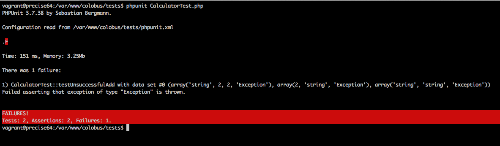

Test your Laravel 4 applications
Presented by Milan Popović / @komita1981
Me
PHP developer
7 years in PHP development
Work for 12 Mnkys
I like to learn and share knowledge
Active member of PHP Srbija
You?
Who are you?
What's your experience in programming?
What's your experience in testing?
What are your expectations?
What is testing?
Testing is the activity of finding out whether a piece of code produces the intended behavior
What do people think about testing?
Who has time to write tests???
Testing is hard
Steep learning curve
Time consuming
Don’t make anybody any money.

Prove you've done your work
Help you check much faster if you're work is done
Protect you from breaking things - regression bugs
Help you make better code design - easier to maintain
Let you apply changes with less worries - refactoring will improve things without breaking anything
Ensures stable, long lasting application
Enhance security
Free documentation

IBM & Microsoft - TDD - 20-40% longer to complete but 40-90% fewer bugs in production
By 2022 it will be not be possible to get a professional programming job if you do not practice TDD routinely
Test types
Acceptance (end-to-end)
Test as if end user would use the whole system/feature
Integration
Test how different parts of system work together
Unit
Test single unit of code - mock all dependencies
What we need to define
What is unit testing?
What is to be tested?
What does not need to be tested?
Unit testing FIRST principles
Writing unit testing before or after code
What is unit testing?
A software testing method to test individual unit of source code - a method in class or a piece of code
What is to be tested?
EVERYTHING
What does not need to be tested?
Getters/Setters
Framework
Third party packages
Unit testing first principles
Fast - Be fast or be dead
Isolation - Run without dependency
Repeatable - Should be idempotent
Self-verifyng - Just pass or fail
Timely - Code change requires new test
Write unit tests before or after code?
After - You test what you code - Test Last - DDT
Before - You code what you test - Test First - TDD


PHPUnit
Member of xUnit family
Created by Sebastian Bergmann
Integrated/Supported by all modern frameworks
Integrated in most IDE (PHPStorm, Netbeans, Eclipse, Zend Studio)
Written for PHP 5.x
Install using composer or phar
"require-dev": {
"phpunit/phpunit": "4.2.*"
},
PEAR install - not supported from 1.1.2015
PHPUnit's test goals
Easy to learn to write
Easy to write
Easy to read
Easy to execute
Quick to execute
Isolated
Composable
Test config & structure
Configured in phpunit.xml file
The tests for a class Class go into a class ClassTest
ClassTest inherits (most of the time) from PHPUnit_Framework_TestCase
The tests are public methods that are named test*
Inside the test methods assertion methods are used - assert*
./app/tests/Unit/Libraries/
./app/tests/Unit/
./app/tests/Integration/
./app/tests/
Assertion methods examples
AssertTrue - Check the input to verify it equals true
AssertFalse - Check the input to verify it equals false
AssertEquals - Check the result against another input for a match
AssertContains - Check that the input contains a certain value
Many more asserts - official documentation...
class Calculator
{
public function add($a, $b)
{
return $a + $b;
}
}
class CalculatorTest extends PHPUnit_Framework_TestCase
{
protected $calculator;
public function setUp()
{
$this->calculator = new Calculator();
parent::setUp();
}
public function testSuccessfulAdd()
{
$this->assertEquals(9, $this->calculator->add(3, 6));
}
public function tearDown()
{
parent::tearDown();
}
}
/**
* @dataProvider getSuccessfulAddData
*/
public function testSuccessfulAdd($data)
{
$this->assertEquals($data['result'],
$this->calculator->add($data['a'], $data['b']));
}
public function getSuccessfulAddData()
{
return array(
array(
array('a' => 1, 'b' => 2, 'result' => 3),
array('a' => 2, 'b' => 1, 'result' => 3),
array('a' => 0, 'b' => 1, 'result' => 1),
array('a' => 1, 'b' => 0, 'result' => 1),
)
);
}
/**
* @dataProvider getUnsuccessfulAddData
*/
public function testUnsuccessfulAdd($data)
{
$this->setExpectedException($data['expectedException']);
$this->calculator->add($data['a'], $data['b']);
}
public function getUnsuccessfulAddData()
{
return array(
array(
array('a' => 'string', 'b' => 2, 'result' => 2, 'expectedException' => 'Exception'),
array('a' => 2, 'b' => 'string', 'expectedException' => 'Exception'),
array('a' => 'string', 'b' => 'string', 'expectedException' => 'Exception'),
)
);
}

class Calculator
{
public function add($a, $b)
{
if (! is_int($a) or ! is_int($b)){
throw new Exception('Only integers allowed');
}
return $a + $b;
}
}
class ScientificCalculator
{
public function complex($a)
{
return "Too complex $a";
}
}
class Calculator
{
public function complex($a)
{
$scientificCalculator = new ScientificCalculator();
return $scientificCalculator->complex($a);
}
}

class ScientificCalculator
{
public function complex($a)
{
return "Too complex $a";
}
}
class Calculator
{
protected $scientificCalculator;
public function __construct(ScientificCalculator $scientificCalculator)
{
$this->scientificCalculator = $scientificCalculator;
}
public function complex($a)
{
return $this->scientificCalculator->complex($a);
}
}
class CalculatorTest extends PHPUnit_Framework_TestCase
{
protected $calculator;
public function setUp()
{
$this->calculator = new Calculator(new ScientificCalculator());
parent::setUp();
}
...
class CalculatorTest extends PHPUnit_Framework_TestCase
{
protected $calculator;
protected $scientificCalculatorMock;
public function setUp()
{
$this->scientificCalculatorMock = $this->getMockBuilder('ScientificCalculator')->getMock();
$this->calculator = new Calculator($this->scientificCalculatorMock);
parent::setUp();
}
public function testSuccessfulComplex()
{
$a = 1;
$returnValue = "Something";
$this->scientificCalculatorMock
->expects($this->once())
->method('complex')
->with($this->equalTo($a))
->will($this->returnValue($returnValue));
$this->assertEquals($returnValue, $this->calculator->complex($a));
}
Mockery
Simple, powerful framework for creating Mock Objects
Install through Composer
"require-dev": {
"mockery/mockery": "0.9.*@dev"
},
Mock method
$mockedObject = Mockery::mock('\Show\ExampleClass');
Partial mocks
$mockedObject = Mockery::mock('\Show\ExampleClass[save, send]');
$mockedObject = Mockery::mock('\Show\ExampleClass')->makePartial();
Should Receive
$this->mock->shouldReceive('methodName');
Once, Twice, Times(n), Never
$this->mock
->shouldReceive('methodName')
->once();
$this->mock
->shouldReceive('methodName')
->never();
With
$this->mock
->shouldReceive('methodName')
->once()
->with($params);
And Return
$mockedObject = Mockery::mock('\Show\ExampleClass');
$mockedObject
->shouldReceive('all')
->once()
->with($param)
->andReturn('foo');
Testing in Laravel 4
Built with unit testing in mind
Utilizes the Symfony HttpKernel, DomCrawler, and BrowserKit components
All tests inherit app/tests/TestCase.php file
class TestCase extends Illuminate\Foundation\Testing\TestCase {
/**
* Creates the application.
*
* @return \Symfony\Component\HttpKernel\HttpKernelInterface
*/
public function createApplication()
{
$unitTesting = true;
$testEnvironment = 'testing';
return require __DIR__.'/../../bootstrap/start.php';
}
}
abstract class TestCase extends \PHPUnit_Framework_TestCase {
use ApplicationTrait, AssertionsTrait;
...
ApplicationTrait
cal(...) - Call the given URI and return the Response
action(...) - Call a controller action and return the Response
route(...) - Call a named route and return the Response
seed($class = 'DatabaseSeeder') - Seed a given database connection
be(...) - Set the currently logged in user for the application
AssertionsTrait
assertResponseOk() - Assert that the client response has an OK status code
assertResponseStatus($code) - Assert that the client response has a given code
assertViewHas($key, $value = null) - Assert that the response view has a given piece of bound data
assertRedirectedTo($uri, $with = array()) - Assert whether the client was redirected to a given URI
Mocking facades
public function crypt()
{
Crypt::setKey('someKey');
}
public function testCrypt()
{
Crypt::shouldReceive('setKey')->once()->with($key);
}
shouldReceive method called on the facade return an instance of a Mockery mock
public function __construct(User $userModel)
{
$this->userModel = $userModel;
}
public function store()
{
$userData = Input::all();
if(! $this->userModel->validate($userData)){
throw new StoreResourceFailedException($this->userModel->getErrors());
}
try{
$userModel = $this->userModel->create($userData);
if (! $userModel instanceof User){
throw new StoreResourceFailedException();
}
return $userModel;
}catch (Exception $e){
throw new StoreResourceFailedException('Failed');
}
}
use Mockery as m;
class UserControllerTest extends TestCase
{
public function setUp()
{
parent::setUp();
$this->userModel = m::mock('Eloquent', 'Api\Models\User');
}
public function tearDown()
{
parent::tearDown();
m::close();
}
...
public function testSuccessfulStore()
{
$data = ['first_name' => 'John', 'last_name' => 'Doe', 'email' => 'john@johndoe.com'];
$this->userModel
->shouldReceive('validate')
->once()
->with($data)
->andReturn(true);
$mockedUserModel = m::mock('Eloquent', 'Api\Models\User');
$this->userModel
->shouldReceive('create')
->once()
->andReturn($mockedUserModel);
$this->app->instance('Models\User', $this->userModel);
$response = $this->call('POST', $this->createUri('users'));
$this->assertResponseOk();
$this->assertContains(json_encode($data), $response->getContent());
}
public function testUnsuccessfulStore()
{
$data = ['first_name' => 'John', 'last_name' => 'Doe'];
$errorMessage = 'Error';
$this->userModel
->shouldReceive('validate')
->once()
->with($data)
->andReturn(false);
$this->userModel
->shouldReceive('getErrors')
->once()
->andReturn($errorMessage);
$this->userModel
->shouldReceive('create')
->never();
$this->app->instance('Models\User', $this->userModel);
$response = $this->call('POST', $this->createUri('users'));
$this->assertResponseStatus(422);
$this->assertContains($errorMesage, $response->getContent());
}
Programming sins
New Operators - new ClassName()
Using statics - SomeClass::someMethod()
Endless "anding" - Break SRP
Programming sins
Logic in constructor - only assign variables
Using switch-case often - use design patterns instead
Too many dependencies - max 4 dependencies
Advices
Try with writing tests after writing the code
Do not make tests complex
Do not duplicate test code
Treat test like your code
When you get confidence try to write tests before the code
Advices
Run tests often - after every change and before any commit
Test before refactoring
Use continuous integration server

- http://images.sodahead.com/polls/001599249/4445136897_Question_Mark_000007651615XSmall_answer_101_xlarge.jpeg
- https://lh4.ggpht.com/W3DVtNTVIAvZfJ99kDT2hP5cxklxZfLMGehfox8WFCzVk49LOUW-exgVXifFxDKkPts=w300
- http://www.redbubble.com/people/fitbys/works/10613559-results-or-excuses-fitness-slogan-retro?p=art-print
- http://www.slideshare.net/damiansromek/php-tests-tips
- http://www.slideshare.net/ChonlasithJucksripor/unit-test-39809217
- http://blog.typemock.com/2009/03/the-cost-of-test-driven-development.html
- http://lh3.ggpht.com/-X8LPVvE5BYE/UHaLknLmMmI/AAAAAAAABg0/HDu3iZAs2yg/s1600-h/image7.png
- http://lh5.ggpht.com/-jDpF-eS-6TE/UQo_mozEkkI/AAAAAAAAHUg/uu9F08Atq9I/wrong_thumb%25255B39%25255D.jpg?imgmax=800
{kind=link}
{kind=link}
{kind=link}